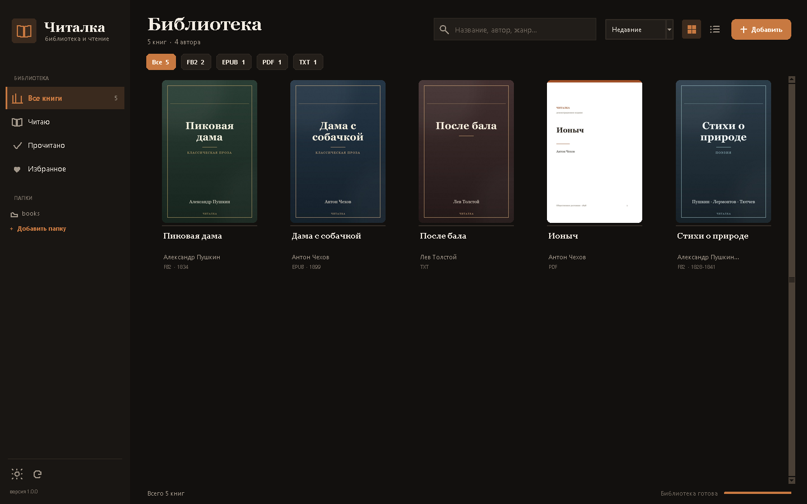

Библиотека, которая
не мешает читать
Простая читалка для Windows: свои книги, каталоги Gutenberg и Викитеки, офлайн-словарь, заметки и статистика. Без сложных настроек и без облака, которое решает за вас.
Portable exe · данные остаются на вашем компьютере

Всё для чтения. Ничего лишнего.
Три сценария, которые должны работать сразу.
Своя библиотека
FB2, EPUB, PDF и TXT в одном месте. Папки, обложки, поиск, прогресс и кнопка «Продолжить».
Чтение без трения
Постраничная вёрстка, темы, шрифты, полноэкранный режим. Двойной клик по обложке — и вы в книге.
Словарь и заметки
Выделите текст: офлайн-словарь, перевод, маркер, цитата. Все заметки — в одном разделе с экспортом в Markdown.
Для тех, кому Calibre слишком много
Никакой конвертации, плагинов и каталогизации на 20 экранов. Только книги, чтение и то, что нужно под рукой.
Мастер первого запуска
Три экрана: добавить книги, открыть, читать. Режим «Только чтение» скрывает каталоги и статистику.
Данные у вас
Библиотека, заметки и настройки хранятся локально. Резервная копия — одним архивом. Онлайн-перевод включается только по вашему выбору.
Тарифы
Базовая читалка — бесплатно. Pro — для тех, кто хочет синхронизацию и развитие проекта.
- Библиотека и все четыре формата
- Читалка, темы и полноэкранный режим
- Заметки, цитаты и экспорт
- Офлайн-словарь FreeDict
- Каталоги Gutenberg и Викитека
- Резервная копия вручную
- Всё из Free
- Синхронизация библиотеки и заметок
- Автоматические резервные копии
- Ранний доступ к обновлениям
- Приоритетная поддержка
Цены — ориентир для теста. Перед продажей нужны лицензия PyMuPDF, юридические документы и проверка спроса.
Частые вопросы
Это заменит Calibre?
Нет. Calibre — комбайн для каталога и конвертации. «Читалка» — про чтение и простую домашнюю библиотеку.
Нужен интернет?
Нет для библиотеки, чтения и офлайн-словаря. Интернет — для каталогов, Викисловаря и перевода, если вы его настроили.
Куда уходят данные?
Библиотека и заметки остаются локально. Наружу уходит только то, что вы сами отправили в каталог, словарь или переводчик.
Будет ли мобильная версия?
Сейчас продукт сфокусирован на Windows. Мобильная версия и синхронизация — возможное направление Pro.